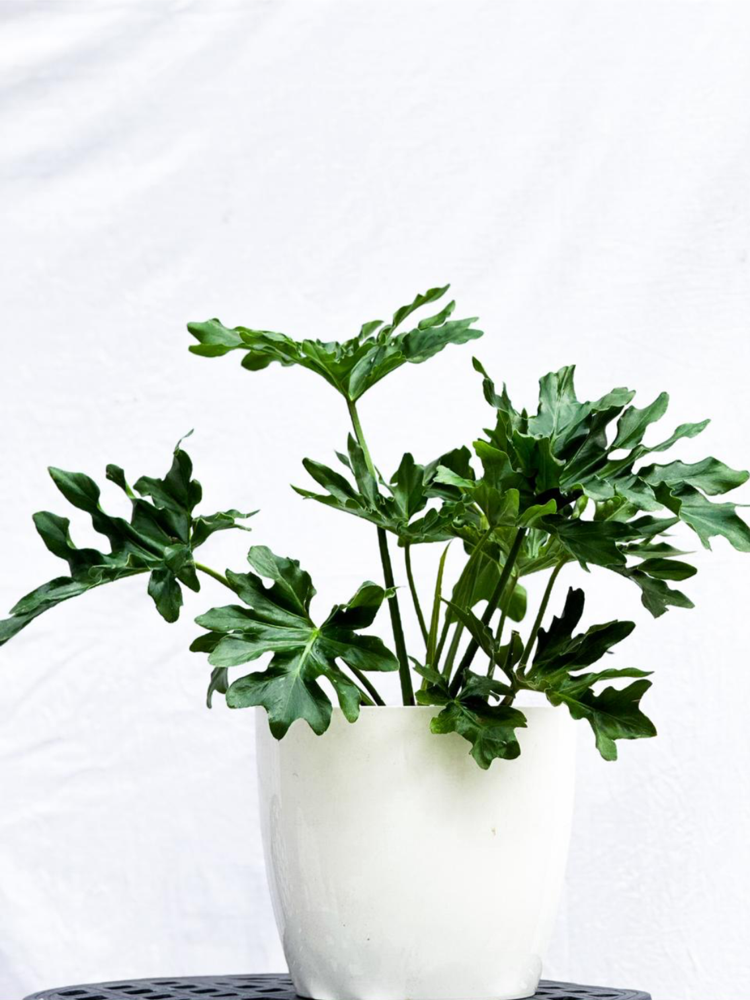

Luz
Brillante e indirecta. Puede tolerar algo de sol suave si se adapta gradualmente.

TU GUÍA DE CUIDADO
Thaumatophyllum bipinnatifidum
Una planta tropical de gran presencia, con hojas profundamente recortadas y una silueta escultórica. Necesita espacio, buena luz y una rutina de riego equilibrada para desarrollar un follaje amplio y vigoroso.
Ver en la tiendaBrillante e indirecta. Puede tolerar algo de sol suave si se adapta gradualmente.
Moderado. Regá cuando la capa superior del sustrato esté seca.
Media a alta. Agradece ambientes húmedos pero bien ventilados.
Un espacio amplio y luminoso donde sus hojas puedan desplegarse sin obstáculos.
LO ESENCIAL
Ubicalo en un ambiente con mucha claridad. La luz brillante indirecta favorece hojas grandes y un crecimiento firme. Puede recibir sol suave de mañana o última hora, pero evitá exponerlo de golpe al sol intenso.
Regá a fondo cuando la superficie del sustrato se haya secado. Dejá que el exceso salga por completo y evitá que quede agua acumulada en el cubremaceta. El exceso sostenido de humedad puede afectar las raíces.
Prefiere temperaturas templadas y una humedad ambiental media a alta. Evitá corrientes frías, cambios bruscos y exposición directa a calefacción o aire acondicionado.
Usá un sustrato suelto, aireado y rico en materia orgánica, con excelente drenaje. Durante primavera y verano podés fertilizar a dosis moderada para acompañar el crecimiento. Reducí o suspendé en invierno.
Sus hojas pueden ocupar bastante volumen. Dale espacio lateral y limpiá el follaje con un paño húmedo para retirar polvo y facilitar la revisión de plagas. Retirá hojas dañadas desde la base con una herramienta limpia.
Trasplantá cuando las raíces ocupen gran parte de la maceta o el sustrato pierda estructura. Elegí un recipiente apenas mayor para mantener un equilibrio entre espacio radicular y velocidad de secado.
SANTA FE · ARGENTINA
Ajustá el cuidado según la temperatura, la cantidad de luz y la velocidad con la que se seca el sustrato.
PRIMAVERA
Con el aumento de temperatura y luz retoma el crecimiento activo. Es un buen momento para trasplantar, podar hojas dañadas y retomar la fertilización.
VERANO
El verano santafesino puede secar el sustrato con rapidez. Revisalo con frecuencia y mantené buena ventilación sin exponer la planta a aire acondicionado directo.
OTOÑO
Con menos horas de luz, el crecimiento se desacelera. Espaciá el riego según el secado real del sustrato y reducí la fertilización.
INVIERNO
El sustrato tarda más en secarse. Ubicalo en un lugar luminoso, lejos de corrientes frías y sin contacto directo con calefacción.
LEÉ SUS SEÑALES
Si aparecen varias hojas amarillas a la vez, revisá especialmente la frecuencia de riego y el drenaje. Un sustrato constantemente húmedo puede afectar el sistema radicular.
Pueden deberse a baja humedad ambiental, riego irregular, acumulación de sales o exposición a aire muy seco. Buscá estabilidad antes de aumentar el riego.
Puede necesitar más luz, nutrientes o espacio radicular. Revisá especialmente la iluminación y el estado general del sustrato.
Puede reaccionar así ante falta de agua, exceso de humedad, frío o estrés ambiental. Revisá el sustrato y las condiciones del lugar antes de intervenir.
El sol directo intenso puede producir quemaduras, mientras que el exceso de humedad puede favorecer manchas oscuras. Observá ubicación, riego y ventilación.
Revisá especialmente hojas nuevas y el envés del follaje. Trips, ácaros y cochinillas pueden aparecer en interiores, sobre todo si la planta está estresada.
IMPORTANTE
El Filodendro Misionero contiene compuestos irritantes y no debe ingerirse. Mantenelo fuera del alcance de niños pequeños y mascotas que acostumbren morder plantas.
SEGUÍ SUMANDO VERDE
Explorá otras plantas de la colección actual de Objeto Vivo.